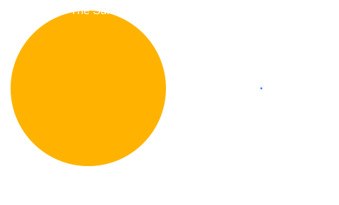

Sun Facts
- Diameter: about 1,391,000 km (109 times Earth).
- Surface temperature: about 5,500 °C.
- Core temperature: about 15 million °C.
- Age: roughly 4.6 billion years.
- Type: a G-type main-sequence star, often called a yellow dwarf.
- It holds 99.86% of the solar system's mass.
- Its light takes 8 min 20 s to reach Earth.
Make the Sun Pulse
Start or stop the glowing animation.
How Big Is It?
